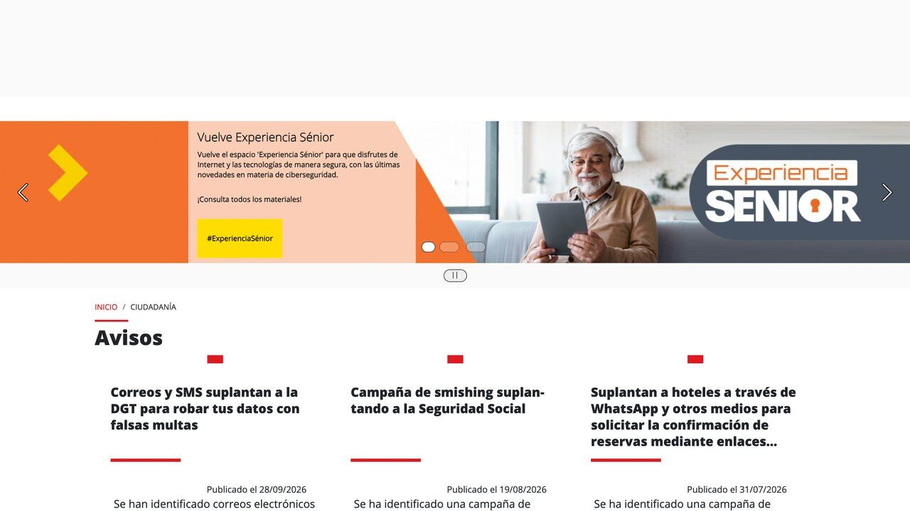
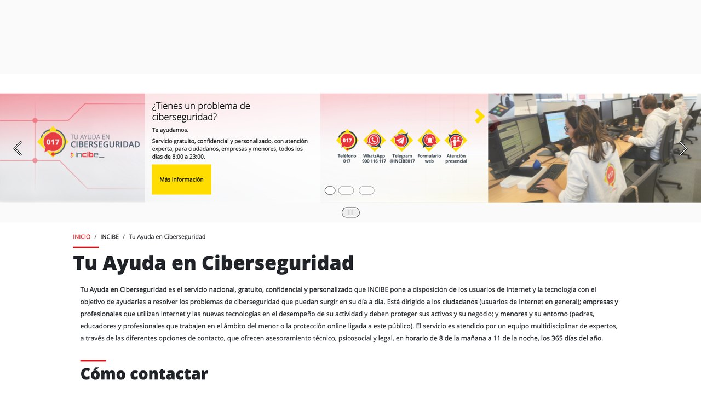

L a llamada dura menos de un minuto. Es la voz de tu hija, llorando: ha tenido un accidente con el coche, hay un herido, necesita pagar algo ya y no puede explicar más. Luego se pone un hombre que dice ser abogado. Todo es urgente, todo es confidencial y todo se resuelve con una transferencia. La voz era suya. O eso parecía.
Este tipo de llamada ya no es ciencia ficción. Con la IA, imitar una voz, fabricar un vídeo de un famoso o escribir un correo del banco sin una sola falta se ha vuelto barato y rápido. Esta guía explica qué estafas con IA están circulando, qué señales siguen delatándolas aunque el disfraz sea perfecto, cómo proteger a tu familia con medidas sencillas y qué hacer, paso a paso, si ya has caído.
La conclusión por delante: no necesitas aprender a detectar si una voz o un vídeo son falsos; necesitas reconocer el guion del engaño, que es el mismo de siempre, y tener un plan para comprobar antes de pagar.
Qué ha cambiado: el engaño se ha vuelto barato
Las estafas no son nuevas. Lo nuevo es lo que cuesta hacerlas bien. Hasta hace poco, un correo falso del banco se delataba por las faltas de ortografía, una llamada del «nieto en apuros» por una voz que no se parecía en nada, y un anuncio de inversión por una foto mal recortada. Esas pistas eran gratis para la víctima y caras de evitar para el estafador. La IA ha dado la vuelta a esa ecuación: hoy escribir un mensaje perfecto en cualquier idioma, imitar una voz o fabricar un vídeo creíble está al alcance de cualquiera con un ordenador.
Los datos empiezan a reflejarlo. El Informe de Defensa Digital 2026 de Microsoft, publicado el 1 de octubre, concluye que a corto plazo la IA ha dado ventaja a los atacantes. En las intrusiones que investigó la compañía, el phishing (los mensajes falsos que buscan que pinches o des tus claves) fue la puerta de entrada en el 23 % de los casos, frente al 7 % del año anterior. Y el tiempo que pasa entre que se descubre un fallo informático y que alguien lo usa para atacar ha bajado de 24 horas. Lo contamos en esta noticia.
La buena noticia, y la idea central de esta guía, es que la IA ha mejorado el disfraz, pero no ha cambiado el guion. Casi todas las estafas siguen necesitando lo mismo de ti: que actúes rápido, por el canal que ellos eligen, pagando de una forma rara y sin contárselo a nadie. Esas cuatro piezas no las puede falsificar ningún modelo, y son las que vas a aprender a ver.
Las seis estafas con IA que más circulan
No es una lista exhaustiva, pero cubre la mayoría de los casos que se están viendo. Para cada una, lo que la hace creíble y el punto exacto donde se rompe.
Suena el teléfono y es la voz de tu hijo, tu madre o tu pareja: ha tenido un accidente, está detenido o le han robado, y necesita dinero ya. A veces la voz dura pocos segundos y enseguida «se pone» otra persona, un supuesto abogado o policía. La voz se ha imitado a partir de vídeos o audios publicados. Dónde se rompe: pide dinero por un método inusual y no te deja colgar. Cuelga y llama tú al número que ya tenías.
Un presentador conocido, un empresario o incluso un político aparece en un anuncio o en un supuesto reportaje explicando cómo multiplicó su dinero con una plataforma. El vídeo es una manipulación con IA de imágenes reales. Dónde se rompe: rentabilidades garantizadas, prisa por entrar y una entidad que no aparece en los registros de la CNMV ni del Banco de España.
Hacienda, tu banco, Correos o la compañía de la luz te escriben con su logo, tu nombre y un tono impecable: hay un cargo pendiente, un paquete retenido o una devolución esperando. Dónde se rompe: el enlace no lleva al dominio oficial y te piden datos que la entidad ya tiene o que nunca pide por ese canal.
Te llama o te escribe el «departamento de seguridad» de tu banco o un servicio técnico. Ahora puede ser un chatbot que responde con soltura a todo lo que preguntas. Te guía para «bloquear una operación sospechosa» que en realidad es una transferencia o la instalación de un programa de control remoto. Dónde se rompe: ningún banco te pide códigos de verificación ni que instales nada para protegerte.
Una persona atractiva y atenta te escribe; sus fotos están generadas con IA o robadas, y sus mensajes pueden estar redactados con ayuda de un modelo. Semanas después aparece la emergencia, el viaje frustrado o la «oportunidad de inversión» que comparte contigo. Dónde se rompe: nunca puede hacer una videollamada normal y, tarde o temprano, el dinero entra en la conversación.
Ofertas para «entrenar inteligencias artificiales desde casa» que piden pagar un curso o un depósito, o apps y extensiones que se presentan como versiones gratuitas de asistentes conocidos y piden permisos excesivos. Dónde se rompe: un empleo real no te cobra por empezar, y una app de IA no necesita leer tus mensajes ni tus contraseñas.
Hay un séptimo frente, menos visible: los asistentes y agentes de IA que tú mismo instalas. Si les das acceso a tu correo o a todo tu ordenador, un mensaje o una web maliciosa pueden intentar darles órdenes a tus espaldas. Es lo que se conoce como inyección de prompts, y lo vemos en la sección 6.
Las cuatro señales que la IA no puede falsificar
Intentar adivinar si una voz «suena a robot» o si un vídeo tiene los labios desincronizados es una batalla perdida: los modelos mejoran cada mes y, con el móvil en la mano y el corazón acelerado, nadie analiza nada. Es mucho más fiable fijarse en la estructura del engaño, que no ha cambiado.
«Tiene que ser ahora», «en una hora se cierra», «si cuelgas lo pierdes». La urgencia existe para que no pienses ni consultes. Cualquier petición de dinero o de datos con cuenta atrás merece, precisamente por eso, que te pares.
Te llaman desde un número que no conoces, te escriben por un WhatsApp nuevo, te mandan un enlace. Una entidad o una persona real puede esperar a que tú la contactes por el canal de siempre. Una estafa, no.
Bizum a un desconocido, tarjetas regalo, criptomonedas, transferencias a una cuenta «segura» o entregar dinero en mano a un mensajero. Ningún banco, juzgado ni hospital cobra así.
«No se lo digas a papá», «no avises al banco, que el empleado está implicado», «esto es confidencial». Te piden aislarte porque cualquier otra persona rompería el engaño en dos minutos.
El protocolo familiar: cinco minutos que te pueden ahorrar mucho dinero
La mejor defensa contra las voces clonadas no es tecnológica, es una conversación en la cena. Merece la pena tenerla sobre todo con padres y abuelos, que son el objetivo preferido de estas llamadas, y con adolescentes, cuyas voces suelen estar en redes.
- Acordad una palabra clave familiar, en persona y no por mensaje. Que no se pueda deducir de vuestras redes: nada de nombres de mascotas, fechas ni equipos de fútbol.
- Regla de oro: ante una urgencia de dinero, se cuelga y se llama al número de siempre. Si la persona está bien, lo sabréis en diez segundos. Si de verdad hay un problema, la llamada de vuelta no lo empeora.
- Nadie de la familia pide dinero por un canal nuevo. «Te escribo desde este número porque se me ha roto el móvil» es la frase de arranque de muchísimas estafas.
- Activad la verificación en dos pasos en el correo, el banco, WhatsApp y las redes de todos. Con ella, una contraseña robada por phishing no basta para entrar.
- Revisad qué publicáis: vídeos largos hablando a cámara facilitan imitar la voz. No se trata de desaparecer de internet, sino de que las cuentas personales de los más pequeños y de los mayores no sean públicas.
Si quieres que la IA te ayude a explicárselo a tu familia, tienes el prompt listo en Protegerte de las estafas con voz clonada.

Usar la IA a tu favor: una segunda opinión, no un juez
Los mismos asistentes que usan los estafadores son una buena herramienta para ti, con una condición: tratarlos como un amigo informado al que consultas, no como un detector infalible. Funcionan muy bien para señalar las pistas clásicas en un mensaje dudoso y para explicarte qué hacer. Lo que no deben hacer es tomar la decisión por ti.
Me ha llegado este mensaje por [SMS / WhatsApp / email / llamada]. He quitado mis datos personales. [pega el texto o describe la llamada] 1. Dime qué señales de estafa ves (urgencia, remitente, enlaces, forma de pago, petición de secreto). 2. Dime qué haría una entidad real en esta situación. 3. Explícame cómo comprobarlo por mi cuenta sin usar los datos de contacto del mensaje. No me digas que es seguro si no puedes comprobarlo.
- Pega el texto, no abras el enlace para enseñárselo, y borra antes tu nombre, DNI, números de cuenta o de tarjeta.
- Desconfía de un «parece legítimo»: el modelo no puede comprobar quién te escribe. Su utilidad es señalar lo raro, no certificar lo normal.
- Úsalo para preparar la llamada de comprobación: qué preguntar al banco o qué decirle a tu madre. Más ideas en nuestro prompt de estafas.
Tus propios asistentes: cuidado con lo que les dejas ver
Cada vez más gente instala asistentes que leen el correo, gestionan el calendario o manejan el ordenador. Son útiles, y también un objetivo nuevo: si un agente con acceso a todo lee un correo malicioso con instrucciones escondidas, puede intentar obedecerlas. No hace falta que el asistente sea malo; basta con que no distinga entre lo que le pides tú y lo que pone en un texto que lee.
Apple lo ha dicho sin rodeos. El 2 de octubre anunció que endurecerá en macOS el permiso de «Acceso total al disco», que deja a una app ver archivos, correo, mensajes e historial del navegador, porque «a medida que los agentes de IA se vuelven más capaces y autónomos, los riesgos asociados a este nivel de acceso crecerán de forma sustancial», según su aviso a desarrolladores. Lo contamos en esta noticia.
- Da a cada asistente solo los permisos que necesita para lo que lo usas. Si solo resume documentos que tú le pasas, no necesita tu correo.
- Desconfía de las apps de IA que piden acceso total al disco, a tus mensajes o a tus contraseñas sin explicar por qué.
- No dejes que un agente envíe correos, pague o borre sin que tú confirmes cada acción.
- Instala asistentes solo desde la tienda oficial o la web del fabricante: las copias «gratis» de apps conocidas son un clásico.
Si quieres revisarlo paso a paso, usa el prompt Revisar qué permisos tiene tu asistente de IA y lee nuestra guía de cómo proteger tus datos cuando usas IA.
Si ya has caído: qué hacer, en orden, en España
Primero, lo importante: le pasa a gente lista y prudente todos los días. Estas estafas están diseñadas para funcionar en el peor momento. La vergüenza es el mejor aliado del estafador, porque retrasa los pasos que pueden recuperar el dinero. Actúa rápido y en este orden:
- Llama a tu banco ya, al teléfono que aparece en tu tarjeta o en su app oficial. Pide bloquear tarjetas y accesos y que intenten anular o retroceder la operación. Las primeras horas cuentan.
- Cambia las contraseñas de las cuentas afectadas, empezando por el correo, desde un dispositivo que sepas que está limpio, y activa la verificación en dos pasos.
- Si instalaste algo a petición del estafador (un programa de control remoto, una app), desinstálalo y no uses ese dispositivo para la banca hasta revisarlo.
- Guarda las pruebas: capturas de mensajes, números de teléfono, correos, justificantes de pago y la hora de cada cosa. No borres la conversación.
- Denuncia en la Policía Nacional o la Guardia Civil. La denuncia suele ser necesaria para reclamar al banco o al seguro.
- Pide orientación gratuita: el 017, la línea de ayuda en ciberseguridad del INCIBE, atiende a particulares y empresas.
- Avisa a tu entorno: si te escribieron haciéndose pasar por ti o por un familiar, es probable que lo intenten con más gente de tu agenda.
Tienes un prompt para ordenar todo esto con calma en He caído en una estafa: qué hago ahora. Y si te han robado el acceso a una cuenta, empieza por recuperar y proteger tus cuentas.
Qué dicen las cifras oficiales en España (julio de 2026)
El Ministerio del Interior publicó en julio de 2026 su Informe sobre la Cibercriminalidad en España 2025. Las fuerzas de seguridad contabilizaron 488.426 ciberdelitos en 2025, un 5,1 % más que el año anterior, lo que supone casi el 20 % (19,8 %) de toda la criminalidad registrada. La gran mayoría son fraudes informáticos, es decir, estafas: 429.677 casos, un 4 % más que en 2024.
Dos precauciones al leer estas cifras. Primera: son denuncias y hechos conocidos por la policía, así que el volumen real es mayor porque mucha gente no denuncia. Segunda: el informe no separa cuántas estafas usaron IA, de modo que no puedes deducir de él cuánto pesa la IA en el total. Lo que sí confirma es la tendencia: el fraude online es el delito que más crece en volumen.
| Si te ha pasado esto | Primer paso | Dónde pedir ayuda |
|---|---|---|
| Has pagado o dado datos bancarios | Llamar ya al banco para bloquear y pedir anular la operación | Teléfono de tu tarjeta o app oficial; después, denuncia |
| Has dado una contraseña | Cambiarla desde un dispositivo limpio y activar la verificación en dos pasos | Si no puedes entrar, el soporte oficial del servicio |
| Has instalado un programa a petición de un desconocido | Desinstalarlo, desconectar el equipo de internet y no usar la banca en él | 017 del INCIBE para orientación técnica |
| Solo has recibido el intento | No responder, no pinchar, bloquear y borrar | Opcional: reenviar al INCIBE o avisar al servicio suplantado |
Sobre la ayuda gratuita: el 017 «Tu Ayuda en Ciberseguridad» del INCIBE es gratuito y confidencial, atiende a ciudadanos, empresas y a menores y su entorno, y funciona todos los días de 8:00 a 23:00. Además del teléfono, la web oficial indica un número de WhatsApp (900 116 117) y un alias de Telegram (@INCIBE017). Comprueba siempre el número en esa web antes de escribir.
Un cambio legal que te afecta como consumidor: desde el 2 de agosto de 2026 el reglamento europeo de IA obliga a etiquetar el contenido sintético realista (vídeo, imagen, audio) y a avisar cuando hablas con una IA. Ayuda, pero no esperes que un estafador lo cumpla: la etiqueta sirve para empresas legítimas, no para quien ya está delinquiendo. Tienes el calendario completo en El AI Act explicado y cómo reconocer contenido sintético en Detectar contenido hecho con IA.
Lo que no hace falta temer
Con tanta noticia es fácil pasar de la confianza ciega a la paranoia, que tampoco ayuda. Algunas cosas que conviene poner en su sitio:
- No necesitas convertirte en experto en detectar deepfakes. Las cuatro señales de la sección 3 y la llamada de vuelta te protegen en la mayoría de casos sin analizar un solo píxel.
- Que te llegue un intento no significa que te hayan «hackeado». Los estafadores envían enormes cantidades de mensajes al azar. Recibir uno no implica que tengan tus datos.
- Usar asistentes de IA no te hace más vulnerable si controlas sus permisos y no les pegas datos sensibles. El riesgo está en el acceso que les das, no en conversar con ellos.
- Tu banco sigue sin pedirte nunca la clave completa, el PIN o los códigos que te llegan por SMS. Esa regla es tan válida en 2026 como hace diez años.
La IA ha encarecido la desconfianza: ahora hay que comprobar cosas que antes dábamos por buenas. Pero la comprobación sigue siendo sencilla y gratuita. Cuelga, llama tú, no pagues con prisas y habla con tu familia. Si quieres profundizar en cómo funcionan las voces sintéticas, tienes la guía de clonar voz, transcribir y generar audio con IA.
Comprueba si tu correo está en una filtración
Muchas estafas con IA empiezan con datos robados: tu correo, tu nombre o una contraseña que se filtró de alguna web. Have I Been Pwned es un servicio gratuito, creado en 2013 por el investigador de seguridad Troy Hunt, que recopila filtraciones conocidas y te deja buscar tu correo.
Qué hacer, paso a paso
- Entra en haveibeenpwned.com y escribe tu dirección de correo.
- Mira la lista de filtraciones en las que aparece y qué datos se expusieron (contraseñas, teléfonos, direcciones…).
- Cambia la contraseña de esas webs y de cualquier otra en la que usaras la misma.
- Activa la verificación en dos pasos en el correo, el banco y las redes sociales.
- Valora usar un gestor de contraseñas para tener una distinta en cada sitio.
Lo honesto: el servicio solo conoce las filtraciones que se han hecho públicas, así que no aparecer no garantiza nada. Y desconfía de cualquier correo que diga venir de esta web pidiéndote la contraseña: la web nunca te la pide. Los planes de pago están pensados para empresas y para su API.